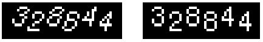

| 命令名称 | Filter_Shift 固定移位 |
| 命令功能 | (通用图像处理)指定每(行/列)的移动数量组成特征串进行扭正图像 |
| 语法格式 | TURING.Filter_Shift(Value, Direction) |
| 参数说明 |
Value：字符串型，像素移位特征串|开始行列数（移动数值：正数向左移动，负数向右移动） Direction：整数型，像素移位方向（默认0，0水平，1垂直） |
| 返回值 | 无 |
| 按键精灵 |
复制代码
'获取图像数据
Call TURING.Pixel_FromPicture("C:\68.bmp")
'Call TURING.Pixel_FromScreen(0, 0, 200, 40)
'固定位置像素移位（水平移位，从第5行开始）
Call TURING.Filter_Shift("-7,-7,-7,-7,-6,-5,-4,-3,-2,_
-1,0,1,2,3,4,5,6,7,7,7,7,7,7,7,6,5,5,4|5")
'效果预览
Call TURING.Pixel_Preview
|
| 滤镜效果 |  |